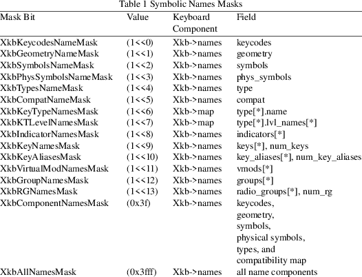

XkbNoteNameChanges − Note the changed names in a changes structure
|
void XkbNoteNameChanges |
(XkbNameChangesPtr old, XkbNamesNotifyEvent |
*new, unsigned int wanted);
|
old |
XkbNameChanges structure to be updated |
|||
|
new |
event from which changes are to be copied |
|||
|
wanted |
types of names for which changes are to be noted |
When your application receives a XkbNamesNotify event, you can note the changed names in a changes structure using XkbNoteNameChanges.
The wanted parameter is the bitwise inclusive OR of the valid names mask bits shown in Table 1. XkbNoteNameChanges copies any changes that are reported in new and specified in wanted into the changes record specified by old.
